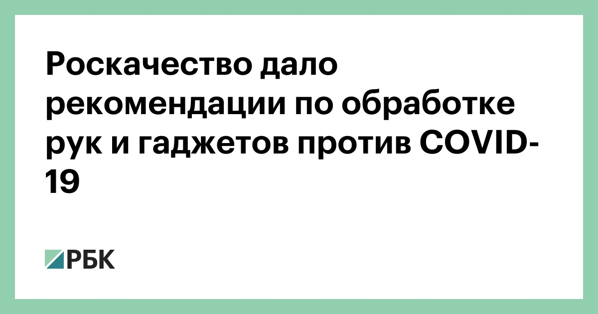

Роскачество дало рекомендации по обработке рук и гаджетов против COVID-19

Наиболее эффективным способом профилактики коронавируса является тщательное мытье рук с мылом, напоминает Роскачество.ВОЗ рекомендует мыть руки водой полминуты, уделяя особенное внимание участкам между пальцами, ногтям и внутренней стороне запястья.
Однако если мыла и воды под рукой нет, то можно использовать антисептик с концентрацией не менее 60% спирта.Для тщательной обработки нужно использовать не менее 3–4 мл антисептического геля, обрабатывать руки гелем надо в течение минуты.В противном случае ученые не могут гарантировать его эффективность.
Роскачество указывает, что также следует дезинфицировать мобильный телефон.Так, дисплей, клавиатуру и корпус телефона нужно протирать жидкостями с содержанием спирта от 70%.Использовать хлорсодержащие отбеливатели не рекомендуется.Силиконовые и пластиковые чехлы для смартфона можно тщательно мыть мылом и оставлять сушить, отмечают эксперты.
По последним данным SCMP, число заразившихся коронавирусом во всем мире превысило 233,7 тыс.человек, еще 9839 человек умерли.По данным на 19 марта, в России зарегистрировали 199 случаев коронавируса.
Posted On: 2020-03-20T06:55:00
Content Date: 2020-03-20
Download Date: 2021-05-13
Document ID: L0C04BZ97